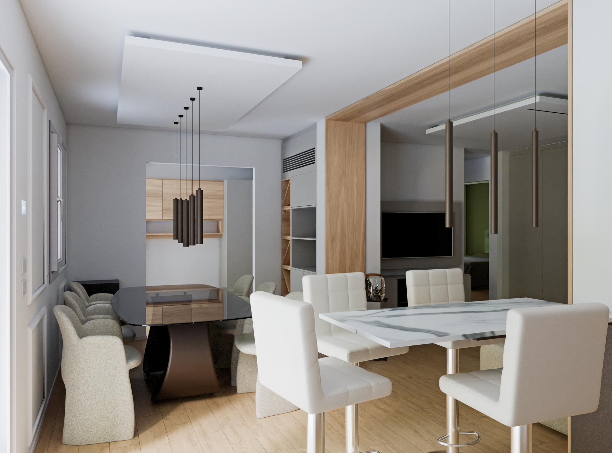

Visualizzazione 3D e Modellazione Coerente per Architettura e Design
I Miei Lavori
Render realistico

Render di interno con focus su realismo scena
Supporto ai professionisti
Animazione 3D di una cucina modellata con elementi da catalogo su planimetria reale.
Realtà aumentata
Su dispositivi mobili il modello 3D può essere posizionato in scala nel contesto reale.
(clicca sul cubo)
Reverse engineering

Modello realizzato dalla misurazione dell'oggetto reale.
Fotogrammetria
Ricostruzione bracciolo/schiena del divano reale mediante l'utilizzo di tecniche fotogrammetriche.
Catalogo

Catalogo aziendale interamente ideato, progettato e realizzato.
Animazione Catalogo
Animazione 3D di prodotto cliente per evidenza social media.
Disegno tecnico

Modello realizzato da disegni CAD 2D
Animazione per Social
Animazione 3D di prodotto cliente per evidenza social media.
Camminata virtuale
Una passeggiata virtuale immersiva per superare i limiti delle planimetrie tradizionali.
Miniappartamento mansardato


Ricostruzione fedele di una piccola unità immobiliare.
Villetta moderna Cordoba

Modello realizzato da fotografia
Texture procedurale


Modello 3D realizzato con materiali ottenuti da texture procedurali
Contatti
AT-render | Modellazione 3D Coerente
Email: atrender.io@gmail.com
Web: www.at-render.com
Instagram: www.instagram.com/atrender777/
Youtube: www.youtube.com/@At-Render

Chi sono
Dalla modellazione millimetrica di un complemento d'arredo alla regia di un'animazione architettonica: mi chiamo Andrea e sono un modellatore 3D specializzato in interior design. In un mondo saturo di immagini generiche ed approssimate, scelgo la strada della cura maniacale per il dettaglio e della fedeltà materica. Supporto studi e professionisti nella creazione di visualizzazioni efficaci, dove la passione per il design si fonde con una solida competenza tecnica decennale.